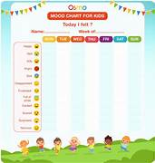

Mental Health Support Tools
Explore these mental health tools to help you manage stress, anxiety, and more.
1. Meditation & Relaxation
2. Mood Tracking
3. Therapy & Counseling

- BetterHelp - Online therapy with licensed professionals.
- Talkspace - Therapy via text, video, or audio.
- 7 Cups - Emotional support from peers and therapists.
4. Crisis Intervention
- National Suicide Prevention Lifeline - Immediate crisis support.
- Crisis Text Line - Text HELLO to 741741 for support.
5. Journaling & Reflection
6. Exercise & Wellness
- Nike Training Club - Free workout programs for physical and mental well-being.
- MyFitnessPal - Track diet and exercise to improve mental health.